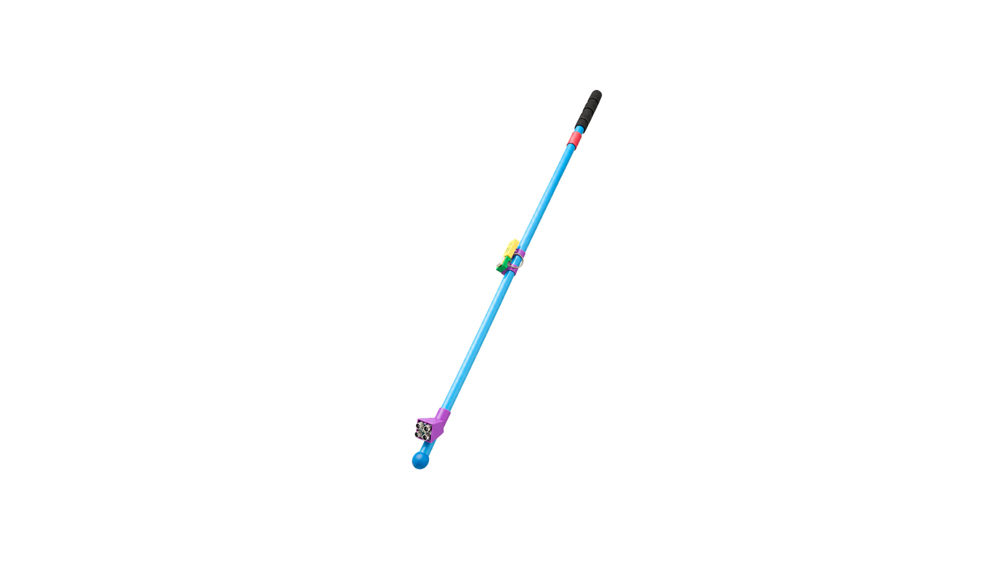
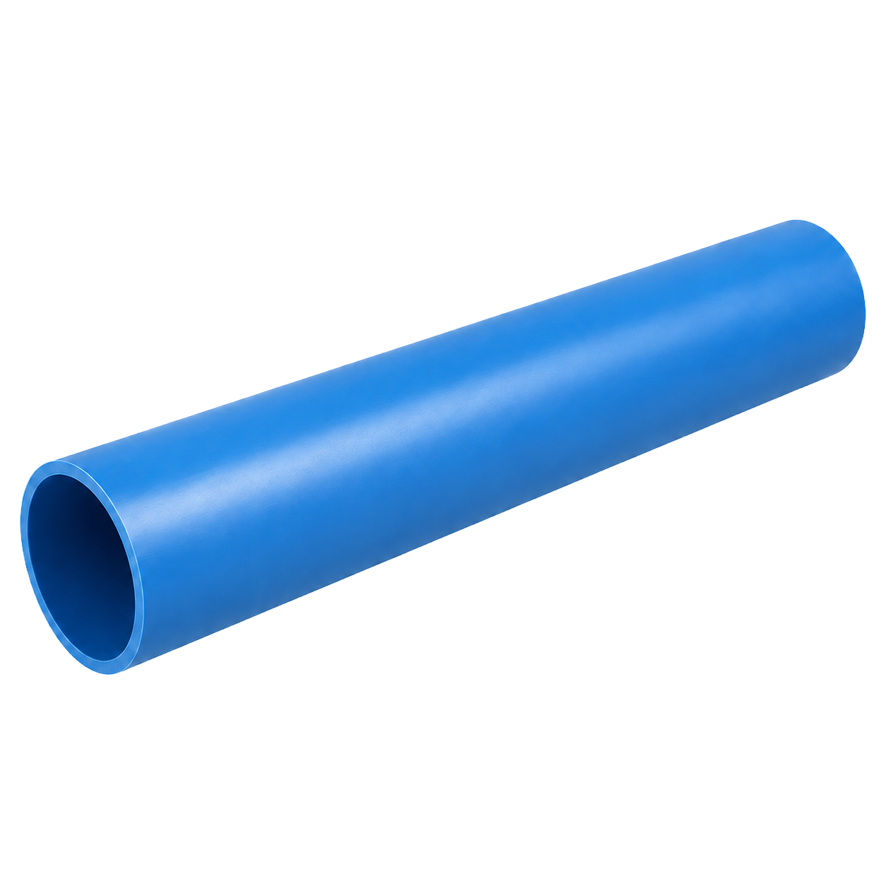

Materiales y diseño del prototipo
Materiales, componentes y modelos 3D de Vision Stick
Esta página reúne los componentes del prototipo, explica para qué sirve cada uno y permite descargar las piezas 3D diseñadas para el proyecto.

Proyecto replicable
Componentes explicados, piezas STL descargables y documentación pensada para seguir mejorando el bastón.
Componentes
Materiales utilizados
Haz clic en cada componente para desplegar su descripción. La idea es que la página sea clara para el equipo, el profesor y cualquier persona que quiera replicar el proyecto.




Archivos de fabricación
Modelos 3D interactivos
Los modelos pueden rotarse, acercarse, centrarse y descargarse en formato STL. Están pensados para documentar la fabricación del prototipo y facilitar que otras personas puedan replicar o mejorar el diseño.
Cargando modelo 3D...
Archivo .STL
Usb Vs
Conexión USB-C y batería: Pieza diseñada para organizar la zona de alimentación, integrando el acceso de carga USB-C y el espacio asociado a la batería del prototipo.
Cargando modelo 3D...
Archivo .STL
Guía de agarre
Referencia táctil del mango: Elemento ubicado en el mango para indicar la zona central de agarre y orientar al usuario mediante una referencia física fácil de reconocer.
Cargando modelo 3D...
Archivo .STL
Unión externa
Conexión visible entre mango y bastón: Pieza de unión estructural entre el mango y el resto del bastón. Aporta firmeza y mejora el acabado exterior del prototipo.
Cargando modelo 3D...
Archivo .STL
Unión interna
Paso y organización de cables: Pieza interna pensada para ordenar el cableado entre el mando, la electrónica y el cuerpo principal del bastón.
Cargando modelo 3D...
Archivo .STL
Carcasa ESP y esfera de contacto
Protección del ESP32: Carcasa para alojar la placa ESP32 y una esfera de contacto, permitiendo proteger la electrónica y mantener una forma integrada al diseño.
Cargando modelo 3D...
Archivo .STL
Soporte sensores
Base para sensores ultrasónicos: Soporte destinado a fijar los sensores ultrasónicos en una posición estable y orientada correctamente para detectar obstáculos.
Para replicar
Ver avances
Diseñado para ser entendido y mejorado
La idea es que Vision Stick pueda documentarse como proyecto abierto: la página muestra materiales, piezas 3D y avances para que otros estudiantes puedan estudiar, adaptar o continuar el desarrollo.